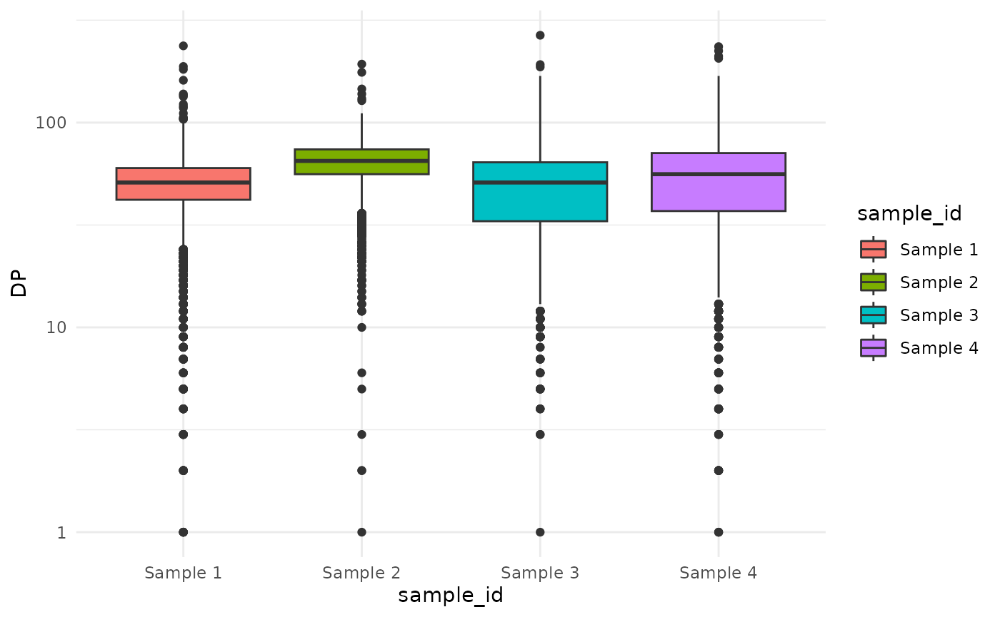

Intro
The basic data structure used by cevomod is the
cevodata S3 class. It is designed to store the
data for the entire cohort of samples (SNVs, CNVs, metadata, models) in
a single object. Storing the data for many samples in a single object,
rather than in a list of single-sample objects, makes it easier to
perform studies on larger cohorts of samples. cevomod internally
iterates over the samples as needed, using vectorized R functions where
possible, which is much faster than the classical loop-based approach.
The visualization methods implemented are also cohort-oriented, allowing
the user to easily compare results between samples and groups of
samples.
All data in the
cevodata' object is stored in tidyverse tibbles. The main components of thecevodata`
object are
- metadata - tibble that associates sample IDs with patient IDs and contains all metadata about patients (such as sex, age, or molecular subtype of tumor) and samples (such as purity estimates),
- SNVs - stores tibbles of SNVs and indels. Multiple tibbles can be stored with alternative lists of variants (different variant callers, data filtering settings, etc.),
- CNVs - stores tibbles of CNVs. Multiple tibbles can be stored with alternative lists of variants,
- models - stores models fitted by
cevomod, but also some intermediate results such as VAF spectra, \(M(f) ~ 1/f\) statistics, and cumulative tails counts, - misc - list of tibbles used by cevomod to store e.g. the model residuals.
Construction
The user interface of cevomod was inspired by the tidyverse R
packages ecosystem and is pipe-oriented. Most functions accept the
cevodata as the first argument and return modified cevodata. This
convention allows building pipelines, for e.g., to compose the cevodata
object by adding new data components step by step. Let’s create an
example cevodata object. We will use the
test_data dataset.
SNVs
test_data contains SNVs for 4 artificial samples. SNVs()
function can be used to get the SNVs tibble from the cevodata object.
snvs contains 11 columns describing the 16,000 variants in
4 samples:
snvs <- SNVs(test_data)
glimpse(snvs)
#> Rows: 16,000
#> Columns: 11
#> $ sample_id <chr> "Sample 1", "Sample 1", "Sample 1", "Sample 1", "Sample 1"…
#> $ chrom <chr> "chr1", "chr1", "chr1", "chr1", "chr1", "chr1", "chr1", "c…
#> $ pos <int> 1, 2, 3, 4, 5, 6, 7, 8, 9, 10, 11, 12, 13, 14, 15, 16, 17,…
#> $ gene_symbol <chr> NA, NA, NA, NA, NA, NA, NA, NA, NA, NA, NA, NA, NA, NA, NA…
#> $ ref <chr> NA, NA, NA, NA, NA, NA, NA, NA, NA, NA, NA, NA, NA, NA, NA…
#> $ alt <chr> NA, NA, NA, NA, NA, NA, NA, NA, NA, NA, NA, NA, NA, NA, NA…
#> $ ref_reads <dbl> 25, 22, 21, 34, 62, 4, 33, 31, 25, 41, 42, 64, 32, 29, 42,…
#> $ alt_reads <dbl> 29, 19, 20, 2, 1, 3, 34, 30, 17, 31, 1, 1, 25, 31, 40, 1, …
#> $ impact <chr> NA, NA, NA, NA, NA, NA, NA, NA, NA, NA, NA, NA, NA, NA, NA…
#> $ VAF <dbl> 0.536, 0.462, 0.488, 0.078, 0.030, 0.444, 0.507, 0.483, 0.…
#> $ DP <int> 54, 41, 41, 36, 63, 7, 67, 61, 42, 72, 43, 65, 57, 60, 82,…Let’s see what the sequencing depth of these variants is.
ggplot(snvs, aes(sample_id, DP, fill = sample_id))+
geom_boxplot() +
scale_y_log10()
Variants with the lowest sequencing depth have the least accurate VAF values. One might want to filter out low-frequency variants to reduce the noise. Let’s remove the variants with a sequencing depth of less than 20.
filtered_snvs <- snvs |>
filter(DP >= 20)Now let’s create a cevodata and add both versions of SNV
data:
cd <- init_cevodata(name = "Training cevodata", cancer = "BRCA") |>
add_SNV_data(filtered_snvs, name = "filtered_snvs") |>
add_SNV_data(snvs, name = "all_Mutect_snvs")
cd
#> <cevodata> dataset: Training cevodata
#> Genome: unknown
#> SNV assays: filtered_snvs, all_Mutect_snvs (default)
#> CNV assays: None
#> 4 samples
#> 16000 mutations total, 4000 +/- 0 mutations per sample
#> Active models:We can see that both SNV sets were added and that the last one added
is the default one. This can be changed using
default_SNVs() function:
default_SNVs(cd) <- "filtered_snvs"
cd
#> <cevodata> dataset: Training cevodata
#> Genome: unknown
#> SNV assays: filtered_snvs (default), all_Mutect_snvs
#> CNV assays: None
#> 4 samples
#> 15072 mutations total, 3768 +/- 149 mutations per sample
#> Active models:In the same way, one can use the add_CNV_data() and
default_CNVs() functions to add the list(s) of CNVs to the
cevodata.
Metadata
Metadata tibble contains only the sample IDs now.
cd$metadata
#> # A tibble: 4 × 1
#> sample_id
#> <chr>
#> 1 Sample 1
#> 2 Sample 2
#> 3 Sample 3
#> 4 Sample 4Lets add some more information:
sample_data <- tibble(
sample_id = c("Sample 1", "Sample 2", "Sample 3", "Sample 4"),
patient_id = c("P1", "P2", "P3", "P4"),
molecular_subtype = c("Lumianl A", "Luminal B", "Luminal A", "TNBC")
)
patient_data <- tibble(
patient_id = c("P1", "P2", "P3", "P4"),
sex = c("male", "male", "female", "male")
)
cd <- cd |>
add_sample_data(sample_data) |>
add_patient_data(patient_data)
cd$metadata
#> # A tibble: 4 × 4
#> sample_id patient_id molecular_subtype sex
#> <chr> <chr> <chr> <chr>
#> 1 Sample 1 P1 Lumianl A male
#> 2 Sample 2 P2 Luminal B male
#> 3 Sample 3 P3 Luminal A female
#> 4 Sample 4 P4 TNBC maleTransformations
3 cevodata transforming functions have been implemented:
-
filter()can be used to subset the cevodata using any metadata columns in a tidyverse manner
cd |>
filter(sex == "female")
#> <cevodata> dataset: Training cevodata
#> Genome: unknown
#> SNV assays: filtered_snvs (default), all_Mutect_snvs
#> CNV assays: None
#> 1 cases, 1 samples, 1 sample per case
#> NA
#> Active models:- split_by() to split cevodata by any metadata column
splits <- cd |>
split_by("sex")
splits
#> $male
#> <cevodata> dataset: Training cevodata
#> Genome: unknown
#> SNV assays: filtered_snvs (default), all_Mutect_snvs
#> CNV assays: None
#> 3 cases, 3 samples, 1 sample per case
#> 11436 mutations total, 3812 +/- 147 mutations per case
#> Active models:
#>
#> $female
#> <cevodata> dataset: Training cevodata
#> Genome: unknown
#> SNV assays: filtered_snvs (default), all_Mutect_snvs
#> CNV assays: None
#> 1 cases, 1 samples, 1 sample per case
#> NA
#> Active models:
#>
#> attr(,"class")
#> [1] "cevo_splits" "list"- merge() to merge 2 objects into one
merge(splits$male, splits$female)
#> Setting active SNVs to filtered_snvs
#> Setting active CNVs to
#> <cevodata> dataset: Merged datasets
#> Genome: unknown
#> SNV assays: filtered_snvs (default), all_Mutect_snvs
#> CNV assays: None
#> 4 cases, 4 samples, 1 sample per case
#> 15072 mutations total, 3768 +/- 149 mutations per case
#> Active models:Transforming functions are helpful in investigating particular samples, for example, when one wants to see the VAF spectrum of one sample only quickly: